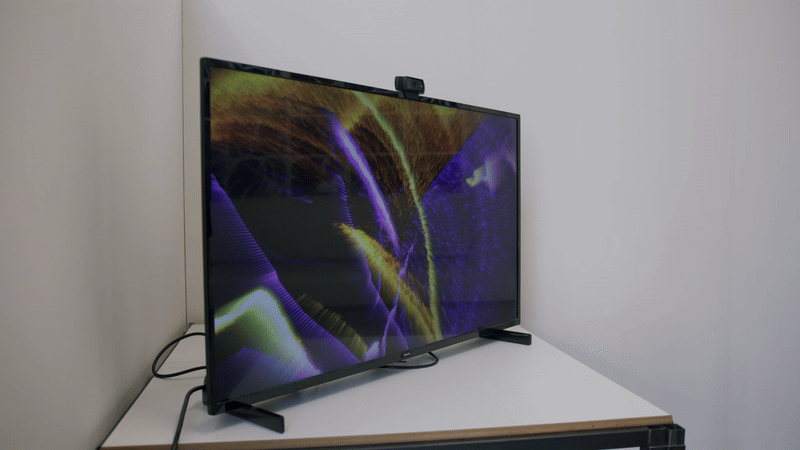

Mick Willemsen
Emerging Artists 2026
A World of Closed Eyes
Interactive Audiovisual installation outputs

The works presented here form A World of Closed Eyes, a collection of visual compositions generated through the interactive installation I Close My Eyes in the Dark. These visuals are the result of experiences created by participants interacting with the installation.

I Close my Eyes in the Dark
Interactive Audiovisual Installation
Developed from research into how audiovisual experiences can contribute to mental wellbeing, the installation invites participants to make intuitive choices without expectations about the final result. Through listening and responding to sound by opening their eyes, each participant creates a unique visual composition, allowing personal expression based on feeling rather than expectations.